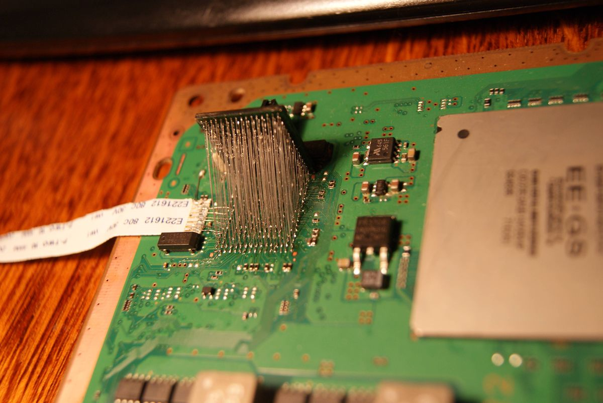
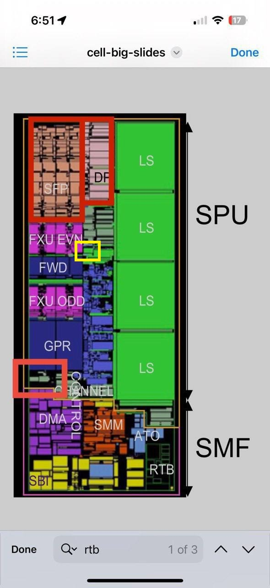
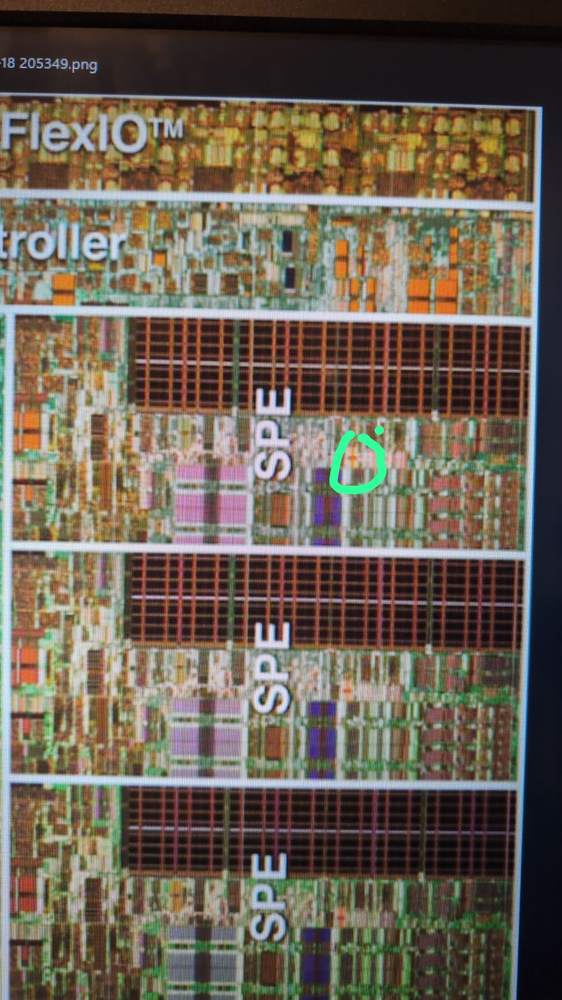
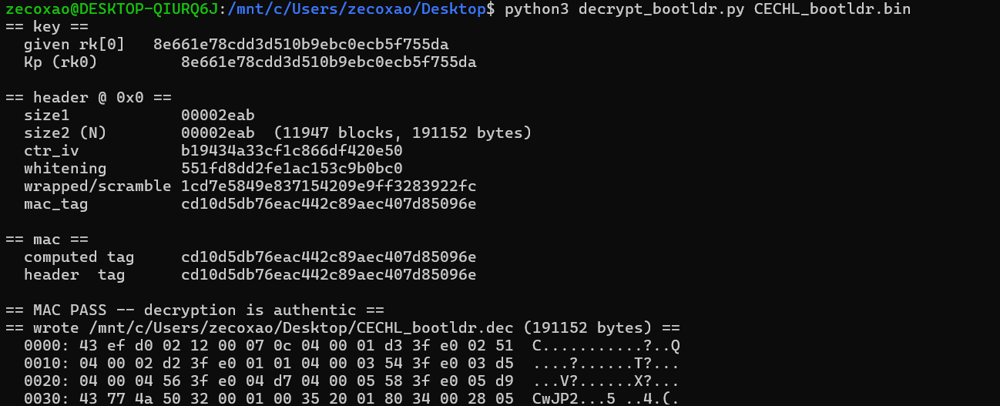
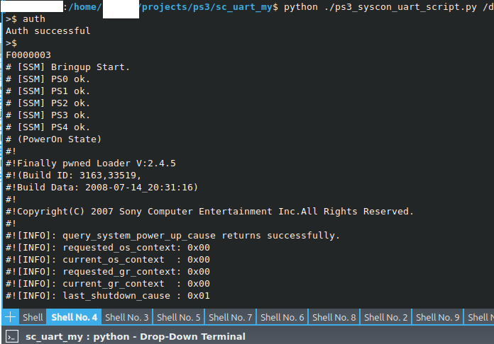

Glitching the "Almost" Perfect Code...
a write-up by zecoxao
credits to the following people:
wildcard
ZeroTolerance
jestero
MikeM64
DJ
flat_z
Mina Ralwasser
sagemono
Kafuu
esc0rtd3w
naehrwert
mysis
skgleba
xorloser
Myria
bguerville
Proxima
golden
and last but not least...Anonymous
The previous work
No decent write up for this rom should start without first talking about the previous work done by wildcard, myself, ZeroTolerance, Proxima, golden, DJ, MinaRalwasser and others responsible for obtaining the master keys used to decrypt syscon firmwares and their patches, as well as the keys necessary to interact with the testbench (our pc) and diagnose the state of the ps3. Without this, qcfw would not become a reality later for all future models. And, without this, no workshop would be able to fix most of their ps3 related hw errors. (Project Frankenstein was born this way, via the multiple collaboration of people who dedicate their lives into making Backwards Compatible PS3s alive again).

https://www.psx-place.com/threads/fault-finding-ylod-with-the-syscon-first-steps-and-error-reporting.30100/QuasiCFW and BadWDSD
It should also be noted that the work set out by the incredible hacker kafuu, together with esc0rtd3w and bguerville, who created, out of a random post from 2010 (describing a possible hack for the wdsd command register vulnerability), turned into what we see now as QuasiCFW, a hack designed for all unhackable consoles that lets you patch any region of lv0, lv1 and lv2 as soon as lv0ldr exits its loading.
https://github.com/aomsin2526/BadWDSD/The Rom
So, you all know the story by now, something from some place in memory loads lv0ldr, this in turn loads lv0, and then that place in memory returns somehow and loads metldr, which then loads isoldr, appldr, rvkldr, lv1ldr and lv2ldr. Then each loads something specific: isoldr loads the isolated spu modules, appldr loads the userland apps, rvkldr loads the revokation lists, lv1ldr loads the hypervisor and lv2ldr loads the kernel. simple, right? The chain looks almost perfect, and since sony patched the ecdsa vulnerability on later models, there should be no room to where we could craft and sign. but there is, and it is in the very two first loaders, lv0ldr, and metldr.

Obtaining The (Microcode) Rom
Simplest way to obtain the very first bootrom is via decapping and imaging. After entering into contact with Anonymous, we decided to ask him if he could help us with this process. Proxima already had a decent ammount of experience in decoding roms, so all we really needed was the right pictures of the bits. After some exchange of words and deciding on a price, work went finally through. The theory was that the supposed rom was in the ppe area, near the pervasive region. He took some pictures and delivered them to us. Unfortunately, it was a massive disappointment, as this rom was not the spu rom, but was in fact the microcode rom. (This piece of code is used to setup the complex ppe instructions into simple machine code). This happened around Christmas 2025.
Obtaining The SPU Rom
After later insisting the SPU regions should be checked (even though it made no sense to check for bits in 8 supposedly identical places), a discovery! The rom existed. It was a bit cluster of 8192 (mirrored) bits, so 0x400 bytes (with the proper decoding). The group started to look for vulnerabilities and to see how the code behaved (anergistic was used for this effect, lvx as well, and tools were created to interact with syscon uart). Code was analyzed and it contained the entire aes handling of the lv0ldr and metldr (minus of course the key, which was channeled through 32 bit reads of channel 66 and locked out from any future access). Several attempts were made of obtaining the key (write specific values to channel 64, mess with isolation status, and a myriad of other attempts). It got settled that, if we were to obtain this key (which is perconsole) we'd have to either glitch or dpa / dfa / spa our way into it somehow.


The Flaw
After some days of conversation, jestero noticed something peculiar via anergistic: spu registers would maintain their values through multiple executions of spu code! This means that, should any of these registers preserve either the channel 66 key or the derived keys, we could obtain it and ALL security would be defeated! After some careful deliberation, a good point of attack was choosen. register 7 was only used during the aes key expansion of the channel 66 derived key. So, if we got this key by glitching the cleanup at a precise timing and reading the register 7, we could then derive backwards (AES allows that), and obtain both the body key AND the cmac key! Finally, after a while, jestero got his CECHL lv0ldr perconsole body key.


The Future and what it Holds for ps3 Hacking
Thanks to these keys we can (this is all theoretical now but should be practical at some point):
-> Get the Channel 66 Key (We can then encrypt and "sign" our own lv0ldr and metldr)
-> Encrypt and sign our lv0ldr and use it to load whatever we want (modded signatures and all)
-> Decrypt lv0ldr.2 and metldr.2 (We can then obtain the future signature keys, though they are useless by now)
-> CFW on ALL PS3 models (thanks mostly to kafuu on this one as his qcfw will allow for true CFW on slim 3000 and super slim)
-> Unbrick on ALL PS3 models (provided the CPU Key/HW Master Key /Channel 66 Key is dumped, or at least one of the
two derived keys for either lv0ldr or metldr)
-> Load anything on it, provided the code exists for it and makes it functional
-> Skip dead bluray boards
-> Skip dead wifi
-> Remarry (Both syscon AND bluray)